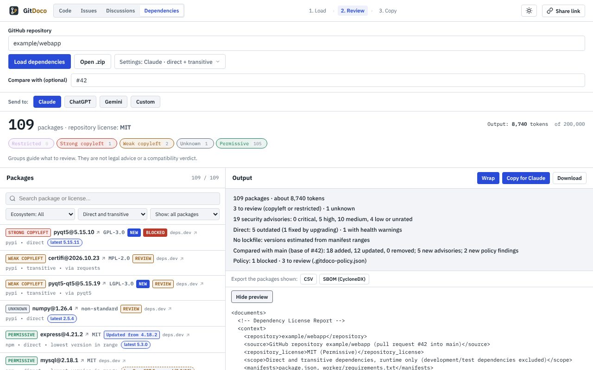

Git
Doco
Check any GitHub repo's
licenses and security
, and triage its issues with your AI.
License policy, advisories, SBOM
What a pull request adds
Issue topics and duplicates

gitdoco.timedoco.com
Free · No account · Runs in your browser